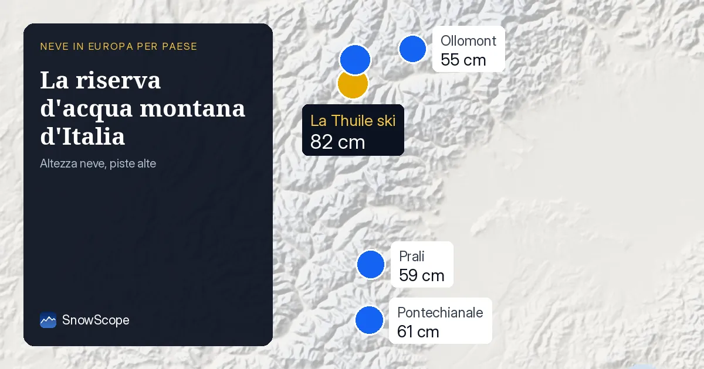
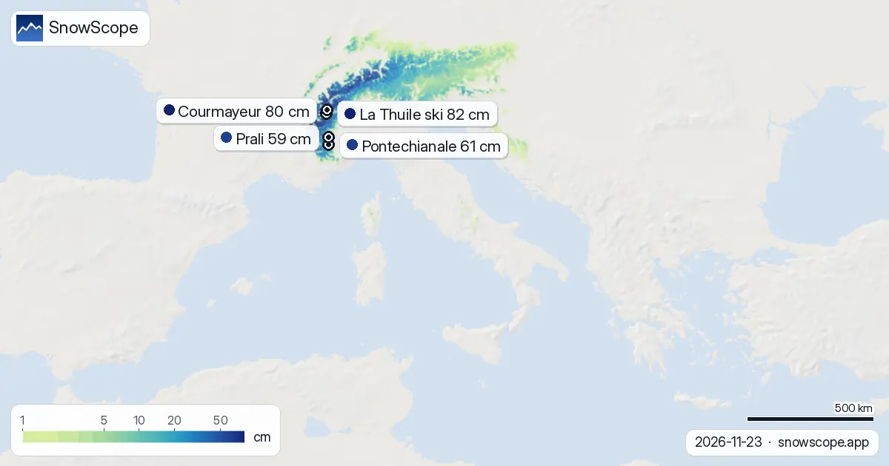
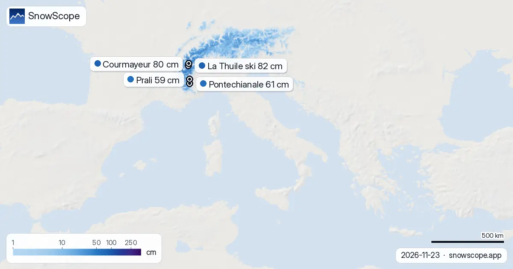

La riserva d'acqua montana d'Italia: 209 cm in Valle d'Aosta, 47 cm in tre giorni
Negli ultimi tre giorni, le montagne italiane hanno immagazzinato acqua sotto forma di neve molto irregolarmente. La Valle d'Aosta, al confine svizzero, ha ricevuto 209 cm di neve—molti più di qualsiasi altro luogo—mentre gli Appennini centrali ne hanno visti solo 10 cm. Questo schema mostra come le tempeste atlantiche colpiscono duramente le Alpi ma lasciano asciutti i rilievi meridionali.
Le previsioni neve in tempo reale per La Thuile ski nell'app SnowScopeAltezza neve, allerte powder e mappa 3D, gratis.
La Valle d'Aosta conserva più acqua
La Valle d'Aosta ha catturato la maggior parte della neve fresca degli ultimi 72 ore: ne sono caduti 209 cm, quasi quattro volte più delle Alpi piemontesi accanto. Questa neve profonda è importante per l'immagazzinamento d'acqua. A La Thuile ski, che si trova a 2.038 m d'altitudine, sono caduti 84 cm in tre giorni, portando la profondità totale a 82 cm. Courmayeur, anch'essa in Valle d'Aosta e più alta a 2.749 m, ha visto 92 cm di neve fresca e ora ne conserva 80 cm. Questi siti ad alta quota sono i serbatoi della natura—la neve si scioglierà lentamente durante l'inverno e alimenterà i fiumi fino alla primavera.
Le Alpi piemontesi a est hanno ricevuto meno, anche se comunque quantitativi significativi. Pontechianale e Prali si trovano entrambe intorno ai 2.100 m d'altitudine e hanno visto 27–28 cm di neve fresca in 72 ore. Il divario tra le valli mostra quanto stretta fosse la banda di neve abbondante: la massa d'aria della tempesta ha colpito più duramente dove i picchi si affacciano sul flusso atlantico in arrivo.
| Località | Altezza neve | Neve fresca, 72 h | In arrivo, prossimi giorni | Quota max |
|---|---|---|---|---|
| La Thuile ski | 82 cm | 84 cm | 19 cm | 2.608 m |
| Courmayeur | 80 cm | 92 cm | 20 cm | 2.749 m |
| Pontechianale | 61 cm | 28 cm | 29 cm | 2.659 m |
| Prali | 59 cm | 27 cm | 28 cm | – |
| Ollomont | 55 cm | 65 cm | 20 cm | – |

Negli ultimi 24 ore la neve è rallentata
Da ieri a oggi sono caduti solo 9 cm ai picchi più alti. Il sistema di tempesta si sta indebolendo. Tuttavia l'evento di tre giorni è stato sostanziale: 25.580 chilometri quadrati delle montagne italiane hanno ricevuto almeno 5 cm di neve fresca in quei 72 ore. La copertura nevosa in tutto il paese è cresciuta da 18.740 km² una settimana fa a 28.200 km² oggi—un aumento di 9.460 km², anche se ieri ha visto un leggero calo di 2.360 km² mentre le quote inferiori si sono sciolte.
L'altitudine conta. Sotto 1.500 m, quasi nessuna neve si trova al suolo. Tra 1.500 m e 2.000 m, solo 5 cm copre tre quarti del terreno. Sopra 2.000 m, il manto nevoso si ispessisce: a 2.000–2.500 m, la profondità media raggiunge 14 cm; sopra 2.500 m, ha una media di 31 cm e copre ogni metro quadrato.

Arriverà altra neve, la più abbondante mercoledì
Il prossimo sistema arriva presto. Nei prossimi tre giorni, la Valle d'Aosta e le Alpi piemontesi vedranno circa 20 cm in più. Mercoledì, 25 novembre, è previsto che sia il giorno di neve più pesante: ai picchi più alti potrebbero caderne 28 cm. Questo aggiungerà altri 36–40 cm ai picchi elevati entro il fine settimana prossimo.
La prospettiva per la settimana successiva (1–7 dicembre) è più asciutta. Solo 3 cm sono previsti in quel periodo. Quindi i prossimi giorni sono critici: aumenteranno il manto nevoso prima che arrivi un periodo più asciutto.
Alcuni comprensori sono già ben forniti
La Thuile ski è in testa in Italia con 82 cm oggi. Courmayeur e Ollomont—entrambi in Valle d'Aosta—sono poco dietro. Questi si trovano ben sopra la linea del gelo di 1.500 m e hanno beneficiato della banda di neve più abbondante. Anche così, la neve di inizio stagione è sottile. Rocce ed erba potrebbero ancora trasparire sui pendii ripidi e gli aspetti esposti a sud, specialmente sotto i 2.000 m.
Nelle Alpi piemontesi, Pontechianale e Prali hanno 61 cm e 59 cm rispettivamente, ma avranno bisogno dei prossimi giorni per costruire una base più spessa. Gli Appennini centrali hanno ricevuto solo 10 cm in 72 ore e rimangono sottili—appena 1 cm in media tra 1.000 m e 1.500 m.
Come si confronta questa settimana con la norma
La neve di inizio stagione è rara in Italia. La Thuile e Courmayeur ora conservano all'incirca tre volte più neve delle loro medie di novembre—101 cm e 105 cm rispettivamente, contro 32 cm e 29 cm in un anno tipico. Ollomont mostra una ricchezza simile. Questo è inusuale per fine novembre ma benvenuto. L'acqua immagazzinata in questi picchi aiuterà fiumi e serbatoi durante l'inverno se si scioglie a un ritmo costante.
Austria e Svizzera sono anche nevose ma più asciutte nel complesso: la copertura nevosa dell'Austria è al 61 percento, quella della Svizzera al 76 percento, contro il 30 percento dell'Italia. La neve fresca italiana è caduta in una banda stretta—guadagni drammatici nel nord-ovest, molto meno altrove.
Cosa osservare dopo
Traccia la neve più pesante mercoledì e controlla il bollettino ufficiale delle valanghe se prevedi di avventurarti fuori pista. La neve di inizio stagione può nascondere rocce; la neve fresca su pendii ripidi può essere instabile. Entro questo fine settimana, i picchi elevati dell'Italia conserveranno significativamente più acqua, ma la base sotto i 2.000 m sarà ancora frammentaria. Dopo il 1° dicembre, il tempo asciutto probabilmente rallenterà la crescita della copertura nevosa, quindi approfitta dei prossimi giorni alle quote più elevate.
Consigli per sciatori
- Scia sopra i 2.000 m dove il manto nevoso è più spesso (profondità media di 14–31 cm) e stabile. I comprensori della Valle d'Aosta—La Thuile ski e Courmayeur—hanno più neve.
- Aspettati che rocce e vegetazione traspariscono sotto i 1.500 m, anche dopo la neve fresca di mercoledì. Evita le piste inferiori fino a quando novembre non sarà più avanzato.
- Controlla il bollettino ufficiale delle valanghe prima di entrare in terreno ripido o zone fuori pista. La neve fresca su nuovi pendii può scivolare, specialmente sui versanti esposti a nord dove la neve nuova si trova su una base fredda e debole di inizio stagione.
- Mercoledì è il giorno più umido davanti: potrebbero cadere 28 cm. Pianifica di sciare giovedì e venerdì per goderti la superficie rinfrescata.
- Usa l'app SnowScope per trovare profondità e neve fresca per fascia d'altitudine e aspetto mentre le condizioni cambiano ogni giorno durante la prossima settimana.
Su questi numeri
Le altezze neve delle località sono la neve più alta sui pendii superiori alla data indicata; sono stime per un'area, non una misura in un punto. Le previsioni possono cambiare. Leggi sempre il bollettino valanghe ufficiale prima del fuoripista.
Cita questo articolo
Per ricerca, didattica o stampa: numeri e grafici sono liberamente riutilizzabili con licenza CC BY 4.0 citando così.
SnowScope (2026), La riserva d'acqua montana d'Italia: 209 cm in Valle d'Aosta, 47 cm in tre giorni, https://snowscope.app/blog/it/2026/11/italy-where-the-snow-fell-23-november-2026.html, consultato il 2026-11-23
SnowScope (Atlas Labs). (2026, November 23). La riserva d'acqua montana d'Italia: 209 cm in Valle d'Aosta, 47 cm in tre giorni. SnowScope snow reports. https://snowscope.app/blog/it/2026/11/italy-where-the-snow-fell-23-november-2026.html
BibTeX
@misc{snowscope2026italywherethesnowfell23n,
author = {{SnowScope (Atlas Labs)}},
title = {La riserva d'acqua montana d'Italia: 209 cm in Valle d'Aosta, 47 cm in tre giorni},
year = {2026},
month = nov,
howpublished = {\url{https://snowscope.app/blog/it/2026/11/italy-where-the-snow-fell-23-november-2026.html}},
note = {Published 2026-11-23 12:43 UTC; accessed 2026-11-23}
}· CC BY 4.0 · Metodi, dati e strumenti →
La Thuile ski: neve e temperatura per quota, quest'inverno vs lo scorso (strumenti) →
Segui La Thuile ski
Gratis: un messaggio quando arriva la neve e il meteo ogni mattina.